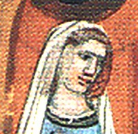

Prinsessa av Stodor. Blev högst 54 år.
881 Prag, Tjekien. [1]
935. [1]
Drahomíra, död efter 935, var en böhmisk hertiginna, gift med Vratislav I och mor till Sankt Vaclav (det är inte säkert att hon verkligen var hans mor) och Boleslaus I av Böhmen
[redigera | redigera wikitext] Liv
Drahomíras hemland låg runt Brandenburg, ett slott nära dagens Berlin. Hon var prinsessa av Havolans.
Hon gifte sig med Vratislav I av Böhmen och födde minst tre barn: Sankt Vaclav, Boleslaus I och St?zislava. Hon ledde sin make till samarbete med sina folkspråk, som förde krig mot Sachsen. Efter makens tidiga död (921) delade hon och hennes svärmor, Sankt Ludmila, regeringen i Böhmen.